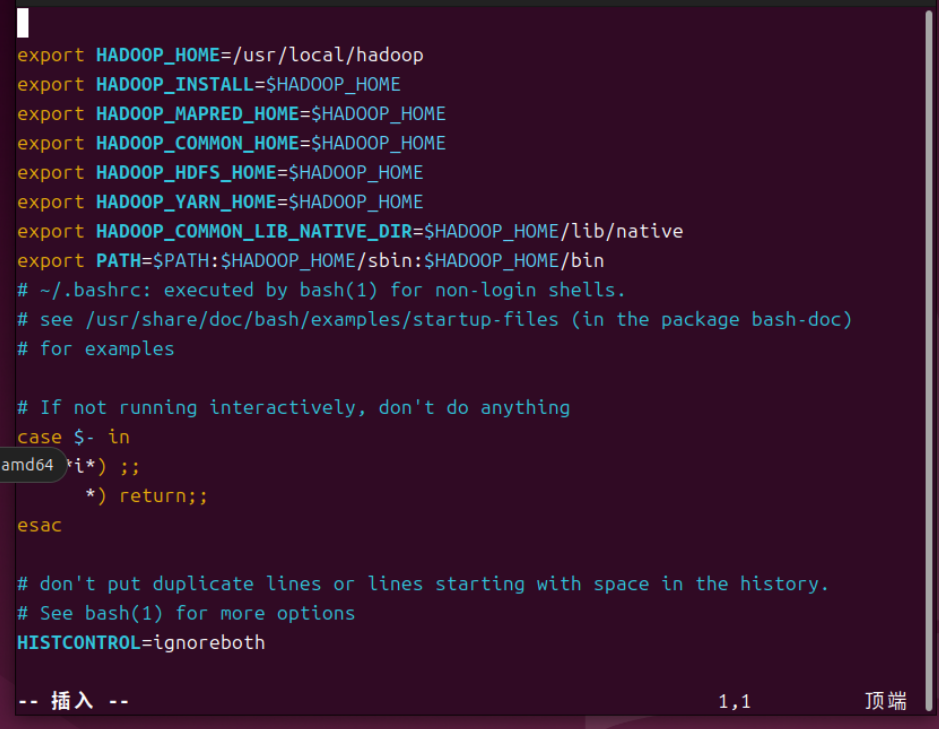

云计算平台组件安装配置实验报告
姓名：白俊
学号：23281295
目录
- 一、大数据平台安装
- 1、Linux虚拟机安装
- 2、Hadoop组件安装
- 3、准备工作
- 二、平台配置
- 1、环境变量配置
- 2、配置文件配置
- 三、启动测试
- 四、ZooKeeper准备
- 1、安装Zookeeper
- 2、解压Zookeeper
- 五、配置Zookeeper
- 1、创建临时数据目录zookeeper-data
- 2、配置zoo.cfg
- 六、启动测试
- 1、启动
- 2、验证状态
一、大数据平台安装
1、Linux虚拟机安装
1) 发行商
虚拟机安装Ubuntu-24.03
安装三台:命名分别为master、slave1、slave2
2) 配置说明
设置三台虚拟机的ip分别为:
- master: 192.168.226.132
- slave1: 192.168.226.133
- slave2: 192.168.226.134
3) SSH免密配置
由于NameNode要能够直接访问到剩下的两个DataNode，就需要设置免密登录
- 在master节点上生成SSH密钥对
- 将公钥配置到所有节点
ssh-keygen -t rsa -P "" -f ~/.ssh/id_rsa
ssh-copy-id master
ssh-copy-id slave1
ssh-copy-id slave2
验证连接性

2、Hadoop组件安装
1) 组件下载
使用阿里云镜像站安装Hadoop-3.3.6版本Hadoop
2) 组件解压
三台虚拟机都需要安装并解压
将压缩包传到虚拟机，使用共享文件夹将主机文件传递到虚拟机:
解压，使用以下命令将压缩包解压:
tar -xzvf hadoop-3.3.6.tar.gz
转移存储位置，将Hadoop的解压缩文件转移到文件夹/usr/local下，方便管理
sudo mv hadoop-3.3.6 /usr/local/hadoop
3、准备工作
1) JDK安装
三台虚拟机都需要安装JDK
rabbit@master:-$ java --version
openjdk 21.0.8 2025-07-15
OpenJDK Runtime Environment (build 21.0.8+9-Ubuntu-0ubuntu124.04.1)
OpenJDK 64-Bit Server VM (build 21.0.8+9-Ubuntu-0ubuntu124.04.1, mixed mode, sharing)
rabbit@master:~$
二、平台配置
1、环境变量配置
在文件~/.bashrc中输入环境变量
再执行下列语句使配置生效:
source ~/.bashrc

2、配置文件配置
1) 配置core-site.xml
执行 sudo vim $HADOOP_HOME/etc/hadoop/core-site.xml
2) 配置hdfs-site.xml
执行 sudo vim $HADOOP_HOME/etc/hadoop/hdfs-site.xml
3) 配置yarn-site.xml
执行 sudo vim $HADOOP_HOME/etc/hadoop/yarn-site.xml
4) 配置mapred-site.xml
执行 sudo vim $HADOOP_HOME/etc/hadoop/mapred-site.xml
5) 配置slave文件
列出所有的DataNode节点:
slave1
slave2
6) 配置DataNode的Hadoop配置文件
使用scp直接将master上的配置文件传输到slave1和slave2上
scp -r /usr/local/hadoop slave1:/usr/local/
scp -r /usr/local/hadoop slave2:/usr/local/
三、启动测试
1、格式化HDFS
hdfs namenode -format
2、启动 HDFS 和 YARN
start-dfs.sh
start-yarn.sh
3、通过浏览器查看集群状态
NameNode UI: http://master:9870
四、ZooKeeper准备
1、安装 Zookeeper
在阿里云镜像站安装 Zookeeper
2、解压Zookeeper
将压缩包放在共享文件夹下，执行以下指令进行解压
tar -zxvf apache-zookeeper-3.9.4-bin.tar.gz
五、配置Zookeeper
1、创建临时数据目录zookeeper-data
2、配置 zoo.cfg
# The number of milliseconds of each tick
tickTime=2000
# The number of ticks that the initial
# synchronization phase can take
initLimit=10
# The number of ticks that can pass between
# sending a request and getting an acknowledgement
syncLimit=5
# the directory where the snapshot is stored.
# do not use /tmp for storage, /tmp here is just
# example sakes
dataDir=/usr/local/apache-zookeeper-3.9.4-bin/zookeeper-data
server.1=192.168.226.132:2888:3888
server.2=192.168.226.133:2888:3888
server.3=192.168.226.134:2888:3888
# the port at which the clients will connect
clientPort=8888
# the maximum number of client connections.
# increase this if you need to handle more clients
maxClientCnxns=60
## Be sure to read the maintenance section of the
# administrator guide before turning on autopurge.
六、启动测试
1、启动
启动成功
2、验证状态
rabbit@slave1:/usr/local/apache-zookeeper-3.9.4-bin$ bin/zkServer.sh status
ZooKeeper JMX enabled by default
Using config: /usr/local/apache-zookeeper-3.9.4-bin/bin/../conf/zoo.cfg
Client port found: 8888. Client address: localhost. Client SSL: false.
Mode: leader
rabbit@slave1:/usr/local/apache-zookeeper-3.9.4-bin$
rabbit@master:/usr/local/apache-zookeeper-3.9.4-bin$ bin/zkServer.sh status
ZooKeeper JMX enabled by default
Using config: /usr/local/apache-zookeeper-3.9.4-bin/bin/../conf/zoo.cfg
Client port found: 8888. Client address: localhost. Client SSL: false.
Mode: follower
rabbit@master:/usr/local/apache-zookeeper-3.9.4-bin$
rabbit@slave2:/usr/local/apache-zookeeper-3.9.4-bin$ bin/zkServer.sh status
ZooKeeper JMX enabled by default
Using config: /usr/local/apache-zookeeper-3.9.4-bin/bin/../conf/zoo.cfg
Client port found: 8888. Client address: localhost. Client SSL: false.
Mode: follower
rabbit@slave2:/usr/local/apache-zookeeper-3.9.4-bin$